Data Classification
Finding patterns in complex datasets, emphasize aspects we think are important.
Descriptive Statistics
When classifying data, descriptive statistics can be used to inform the choice of classification.
- They are also frequently used by the classification methods.
| Operation | Nominal | Ordinal | Interval | Ratio |
| Equality | x | x | x | x |
| Counts/Mode | x | x | x | x |
| Rank/Order | x | x | x | |
| Median | ~ | x | x | |
| Add/Subtract | x | x | ||
| Mean | x | x | ||
| Multiply/Divide | x |
Central Tendency
Highlight the central feature in a dataset.
- Mode: Most frequent value in a set
- Median: Middle value in a set
- Not impacted by outliers - median income
- Mean: Sum divided by count
- Impacted by outliers - mean cost of food
Measures of Dispersion
Give context to measures of central tendency.
- Range: Difference between maximum and minimum
- Interquartile Range: Spread around the median
- Difference between 75th and 25th percentile value - not influenced by outliers
- Standard Deviation: Measure of spread around the mean
- $\sigma = \sqrt{\frac{1}{N}\sum_{i=1}^n x_i - U}$ - influenced by outliers
Frequency Distribution
Most useful for categorical data.
- Counts per class
- Bar charts are a useful way to visualize
Histograms
A useful tool to inspect numeric data
- Orders data and bins by intervals
- Helpful for classifying data
- Outlier detection
- Values separated by from the rest of the data
Probability Distribution
Probability of occurrence based on in a quantitative dataset.
- Normal Distribution: idealized, based on distance from the mean in standard deviations.
- Assumed distribution in many statistical tests.

Deviating from the Norm
Data rarely fits a normal distribution perfectly:
- Skew: deviates from a normal distribution
- Tails with outliers
- Kurtosis: deviates from a normal distribution
- Dispersed or clustered
Near Normal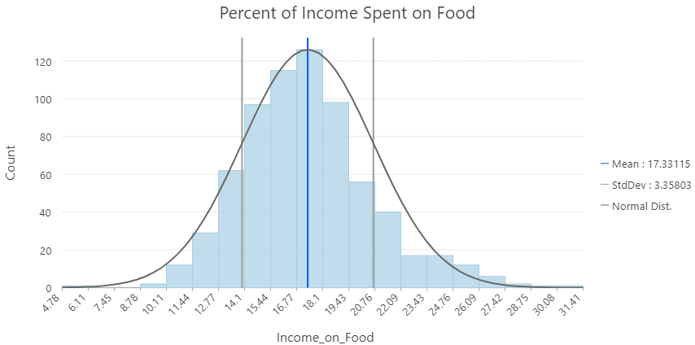
Skewed Normal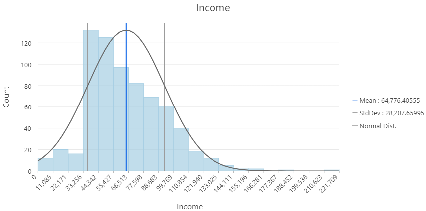
Highly Skewed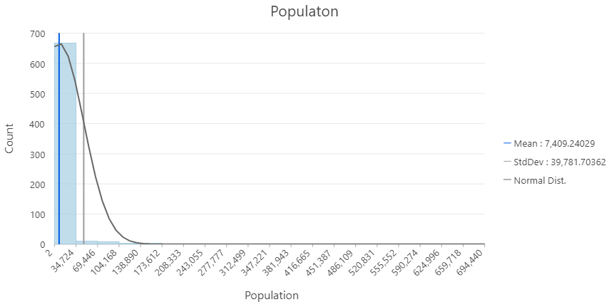
Scaling Data
Often helpful to scale or aggregate a value by a unit of another value - time, area, population etc.
- Example: Canada COVID Portal
- Total cases aren't useful when comparing vastly different populations
- Time rates (rolling 14 day averages) can be smooth out variability.
Normalizing Data
Allows us to account for confounding variables that mask or hide patterns in our data.
Highly correlated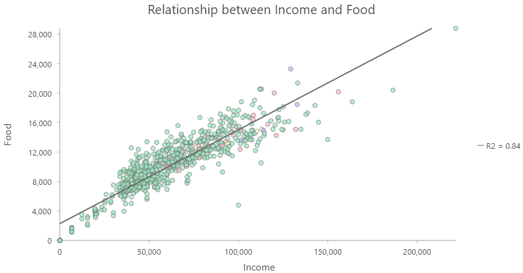
No correlation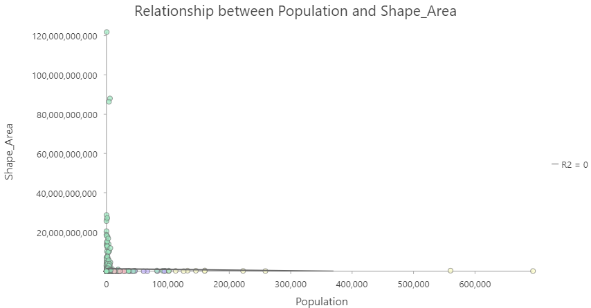
Multiple Factors
It isn't always straightforward to include multiple confounding variables. For example: COVID rates by age groups.

- Population by age group
- Workforce participation
- Occupational exposure

Standardizing
Can also allow us to compare between two or more variables in different units / scales.
- $z = \frac{x-\overline{U}}{\sigma}$
Classification Methods
Unsupervised:
- Data defined classes - the user decides on the number of classes
- The rest is left of up to an algorithm
Supervised:
- User defined - the user explicitly defines classes
- Or provides set of classes as training data
- Degree of user input is variable, more than unsupervised
Common Examples in Arc Pro
Vancouver dissemination area populations
- Not classified
- Color scheme is stretched between min/max
- Difficult to see patterns
One of the simplest classification schemes.
- Data is split to bins of equal width based on the range.
- Unsupervised: user defines number of bins.
Equal Interval
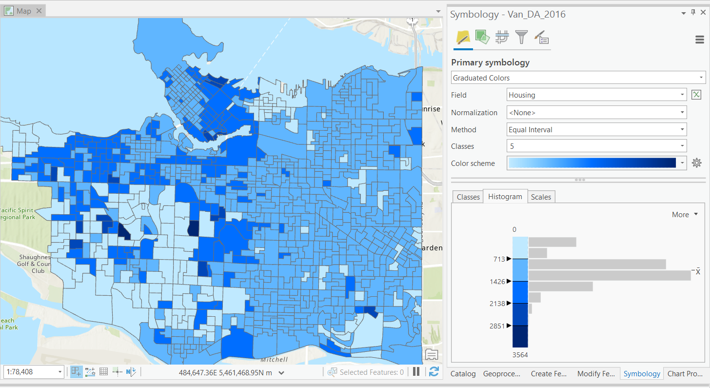Another of the simplest classification schemes.
- Data is split to bins of equal width based on the range.
- Unsupervised: user defines bin width.
Defined Interval
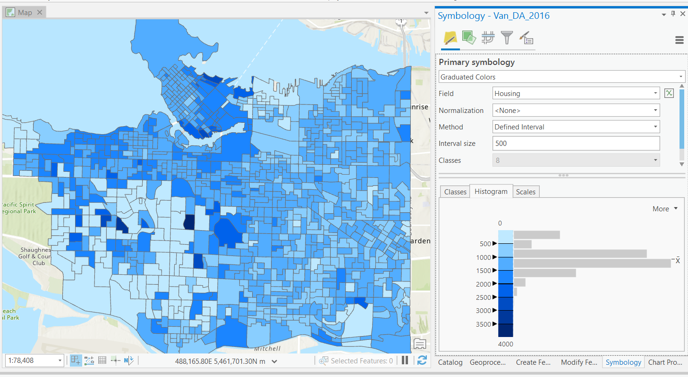Slightly more complex classification scheme.
- Data is split into bins by percentiles.
- e.g. 0-20%, 20-40%, ... 80-100%.
- Unsupervised: user defines number of bins.
Quantiles
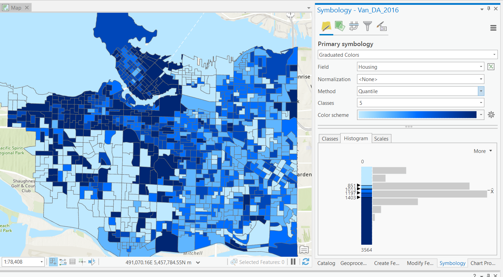More complex, data is split using the Jenks algorithm.
- Optimizes splits, by maximizing within group similarity and between group dissimilarity.
- "Natural" classes.
- Unsupervised: user defines number of bins.
Natural Breaks
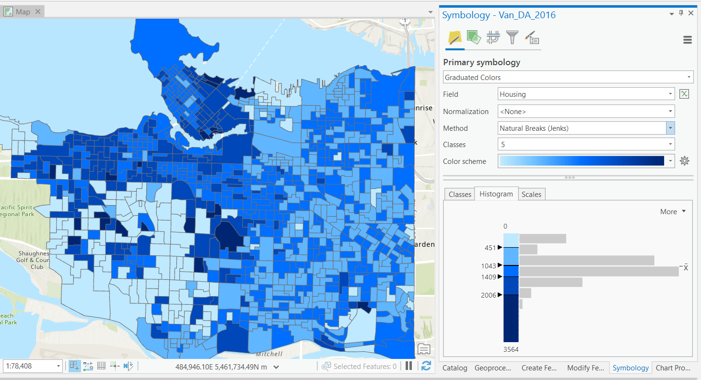Informative to "experts", not accessible for all.
- Distance from the mean in standard deviations.
- Unit-less, converts to interval data.
- Diverging color maps.
- Unsupervised: user defines number of bins.
Standard Deviation
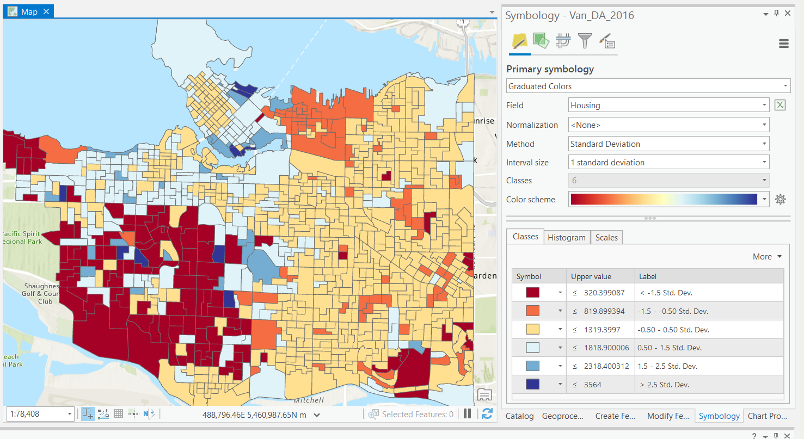Supervised: User defines break values.
- Allows us to choose more meaningful break values if necessary.
- Incorporate multiple factors
- Influence the way the data is perceived.
Manual Breaks
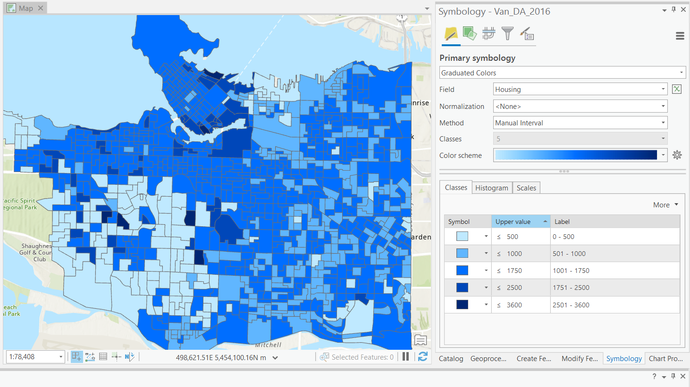More Complex Methods
There are many classification methods that are a bit too complex to actually perform in this course.
- I'm introducing some because important to be aware of them.
- You'll encounter them if you continue with GIS.
K-means
Algorithm uses random steps to group data into clusters.
- Unsupervised: user defines number of bins & iterations.

Median Absolute Deviation
Used for automated detection of outliers.
- Unsupervised: user defines error threshold.

Median Absolute Deviation
Used for automated detection of outliers.
- Unsupervised: user defines error threshold.
Decision Trees
Fit training data to user defined categories.
- Supervised: user provides training classes.
- Automated: algorithm determines break values.
- Risk of over-fitting

Random Forests
Multiple trees (>100) can be averaged to increase performance and generalization.
- Supervised: user provides training classes and "hyperparameters".
- Automated: algorithm determines break values.
- Low risk of over-fitting

Landscape Classification
- Training classes: different ecosystems.
- Training data: time series of peak NDVI.
- Random forest (100 trees)
- 96% validation accuracy!
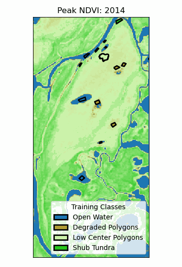

Neural Networks
One of the most complex methods, capable of predictions.
- Supervised: user provides training classes and "hyperparameters".
- Automated: algorithm maps relationships in dataset.
- Risk of over-fitting
- Requires careful inspection